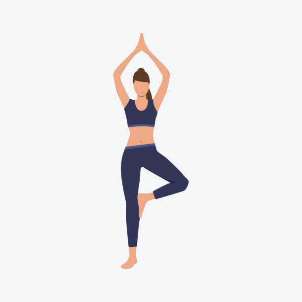
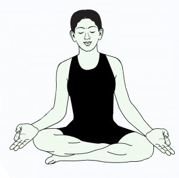
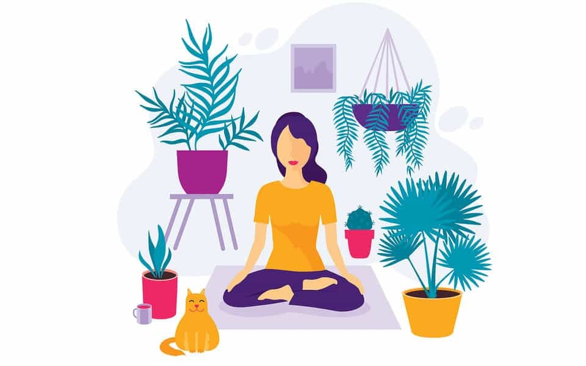
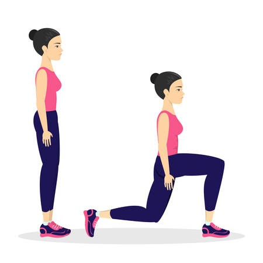
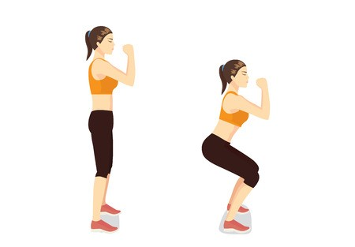
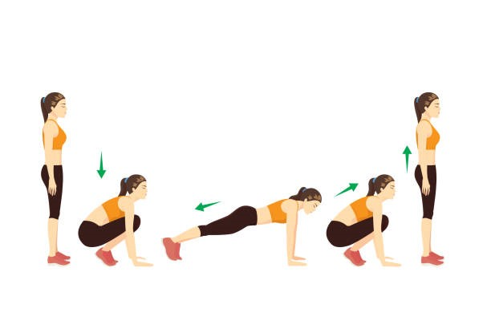

1. Slow movements and deep breathing increase blood flow and warm up muscles, while holding a pose can build strength.
2. Yoga helps with back pain relief.
Yoga is as good as basic stretching for easing pain and improving mobility in people with lower back pain. The American College of Physicians recommends yoga as a first-line treatment for chronic low back pain.
3. Yoga can ease arthritis symptoms.
Gentle yoga has been shown to ease some of the discomfort of tender, swollen joints for people with arthritis, according to a Johns Hopkins review of 11 recent studies.
4. Yoga benefits heart health.
Regular yoga practice may reduce levels of stress and body-wide inflammation, contributing to healthier hearts. Several of the factors contributing to heart disease, including high blood pressure and excess weight, can also be addressed through yoga.
5. Yoga relaxes you, to help you sleep better.
Research shows that a consistent bedtime yoga routine can help you get in the right mindset and prepare your body to fall asleep and stay asleep.
6. Yoga can mean more energy and brighter moods.
You may feel increased mental and physical energy, a boost in alertness and enthusiasm, and fewer negative feelings after getting into a routine of practicing yoga.
7. Yoga helps you manage stress.
According to the National Institutes of Health, scientific evidence shows that yoga supports stress management, mental health, mindfulness, healthy eating, weight loss and quality sleep.
8. Yoga connects you with a supportive community.
Participating in yoga classes can ease loneliness and provide an environment for group healing and support. Even during one-on-one sessions loneliness is reduced as one is acknowledged as a unique individual, being listened to and participating in the creation of a personalized yoga plan.
9. Yoga promotes better self-care.

Try it: Tree Pose
Balance on one foot, while holding the other foot to your calf or above the knee (but never on the knee) at a right angle. Try to focus on one spot in front of you, while you balance for one minute.
Get into position. Tree pose often starts from mountain pose (or Tadasana), with both feet planted firmly on the ground and your weight adequately distributed so that you are balanced.
Bend one leg at the knee. Choose the leg you are going to fold in first. If your left leg is your standing leg, keep your left foot planted on the ground, and slowly bend in your right leg at the right knee so that the sole of your right foot rests against your left inner thigh (known as the half-lotus position in Bikram yoga). Point the knee of your bent leg outward, away from your body.
Lengthen your body. Clasp your hands together in Anjali Mudra (also called the “prayer position”) and raise your arms above your head. In this form, your head, shoulders, pelvis, and left foot should align vertically. The top of your torso should lift slightly, with your tailbone extending towards the ground.
Hold and repeat. Hold the pose for as long as necessary, making sure to breathe properly. When you’re ready to switch legs, exhale, and return to mountain pose to start again.
Try it: Cat-Cow Pose
Get on all fours, placing your palms underneath your shoulders and your knees underneath your hips. First, inhale, as you let your stomach drop down toward the floor. Then, exhale, as you draw your navel toward your spine, arching your spine like a cat stretching.
Begin on your hands and knees in table pose, with a neutral spine. As you inhale and move into cow pose, lift your sit bones upward, press your chest forward and allow your belly to sink.
Lift your head, relax your shoulders away from your ears, and gaze straight ahead.
As you exhale, come into cat pose while rounding your spine outward, tucking in your tailbone, and drawing your pubic bone forward.
Release your head toward the floor — just don’t force your chin to your chest. Most importantly, just relax.
Try it: Downward Dog Pose
Get on all fours, then tuck your toes under and bring your sitting bones up, so that you make a triangle shape. Keep a slight bend in your knees, while lengthening your spine and tailbone.
On a yoga mat, begin in Downward-Facing Dog Pose. To do this, start on all fours and place your hands in front of you on the mat (palms down). Press into your hands and feet, straighten your legs, and raise your hips up towards the sky. Your body will be in an upside-down V position.
Next, raise your right leg off the ground and bring your right knee to the back of your right wrist. Then, rotate your right shin so that it’s parallel with the front of your mat.
As you bring your right leg to the mat, keep your left leg straight as it reaches the ground.
Bring your right knee outward so it’s farther to the right than your hips and ensure your right foot is dorsiflexed (flexed toward the shin). Gently lower your right buttocks towards the ground, but ensure you’re keeping your weight equally distributed between both hips. If this is too difficult, place a folded towel underneath your right buttocks.
Place both hands under your shoulders and gently press into the palms of your hands to straighten and elongate your spine. Look straight forward and feel the stretch. At this point, you have achieved Classic Pigeon Pose.
Next, take a deep breath and as you exhale, lower your torso over your right leg, and stretch your arms straight in front of you, with your elbows slightly bent. Place your forehead either on a yoga block or on your forearms crossed in front. If this is uncomfortable for you, simply reach forward as far as you’re comfortable.
Gently bring your shoulders back away from your ears in a relaxed position.
Hold this position for 5–10 slow, deep breaths.
Repeat on the other side.
Try It: Legs-Up-the-Wall Pose
Sit with your left side against a wall, then gently turn right and lift your legs up to rest against the wall, keeping your back on the floor and your sitting bones close to the wall. You can remain in this position for 5 to 15 minutes.
Sit with your right side against the wall, with bent knees and your feet drawn in toward your hips.
Swing your legs up against the wall as you turn to lie flat on your back.
Place your hips against the wall or slightly away.
Place your arms in any comfortable position.
Stay in this position for up to 20 minutes.
To release the pose, gently push yourself away from the wall.
Relax on your back for a few moments.
Draw your knees into your chest and roll onto your right side.
Rest for a few moments before slowly moving into an upright position.

Try It: Corpse Pose (Savasana)
Lie down with your limbs gently stretched out, away from the body, with your palms facing up. Try to clear your mind while breathing deeply. You can hold this pose for 5 to 15 minutes.
Sit down normally on the floor. (If you are not used to sitting on the floor or you are uncomfortable, then keep one thick folded blanket on the floor for firm and flat base for sitting). Stretch out your legs ahead in front.
Now cross your legs and broaden your knees, in order that you can slip your both foot under the opposite knee.
After that you have to bend your knees along with fold your legs.
Keep your feet loose, in order that the external edges lay on the floor and the inner curves are settled beneath the inverse leg.
Your thighs and crossed legs ought to frame a little triangle. Keep some space between your feet and pelvis.
Now sit with your buttock in a neutral position. (For this, you have to press your hands opposing the ground and lift your sitting bones a bit). Attempt to hold for a breath or two and after that gradually bring down yourself back on to the floor.
Balance your tail bone and pubic bone in a manner that they are equidistant from the floor.
Keep your hands on your knees with palm facing down and expand your tailbone against the floor. (You can keep your hands in Gyan mudra).
Try It: Child’s Pose
Come onto your hands and knees, with your hands a tiny bit in front of your shoulders and your knees directly below your hips. Spread your palms, rooting down through all four corners of your hands, and turn your toes under.
Exhale and lift your knees from the floor, at first keeping your knees slightly bent and your heels lifted off the floor. Lengthen your tailbone away from the back of your pelvis, lift the sitting bones toward the ceiling, and draw your inner legs from your inner ankles up through your groins.
On an exhalation, push your top thighs back and stretch your heels toward the floor. Straighten your knees without locking them.
Firm your outer arms and press the bases of your index fingers actively into the floor. Lift along your inner arms from the wrists to the tops of the shoulders. Firm your shoulder blades against your back, then widen them and draw them toward your tailbone. Keep your head between your upper arms.
Stay in the pose for 10 or more breaths, then bend your knees on an exhalation and lower yourself into Child’s Pose
Try It: Pidgeon Pose
Begin on your hands and knees. Center your breath, and begin to let your thoughts slow down. Turn your awareness inward.
Spread your knees wide apart while keeping your big toes touching. Rest your buttocks on your heels.
Those with very tight hips can keep their knees and thighs together.
Sit up straight and lengthen your spine up through the crown of your head.
On an exhalation, bow forward, draping your torso between your thighs. Your heart and chest should rest between or on top of your thighs. Allow your forehead to come to the floor.
Keep your arms long and extended, palms facing down. Press back slightly with your hands to keep your buttocks in contact with your heels. Lengthen from your hips to your armpits, and then extend even further through your fingertips.
For deeper relaxation, bring your arms back to rest alongside your thighs with your palms facing up. Completely relax your elbows.
Let your upper back broaden. Soften and relax your lower back. Allow all tension in your shoulders, arms, and neck to drain away.
Keep your gaze drawn inward with your eyes closed.
Hold for up to a minute or longer, breathing softly.
To release the pose, gently use your hands to walk your torso upright to sit back on your heels.
Baby pigeon pose
Try It: Mountain pose
Stand with the feel parallel, a few inches apart. (Alternately you may stand with the bases of your big toes touching, heels slightly apart.
Lift and spread your toes and the balls of your feet, then lay them softly back down on the floor. Rock gently back and forth and side to side. Gradually reduce this swaying to a standstill, with your weight balanced evenly across your feet. Feel the energy draw from your feet up through your core.
Without pushing your lower front ribs forward, lift the top of your sternum straight toward the ceiling. Widen your collarbones. Allow your shoulder blades to draw toward each other and down the back, away from the ears.
Let your arms relax beside your torso, palms facing in or forward.
Balance the crown of your head directly over the center of your pelvis, with the underside of your chin parallel to the floor, throat soft, and tongue wide and flat on the floor of your mouth. Soften your eyes. Breathe.

Meditation is simpler (and harder) than most people think. Read these steps, make sure you’re somewhere where you can relax into this process, set a timer, and give it a shot:
1) Take a seat
Find place to sit that feels calm and quiet to you.
2) Set a time limit
If you’re just beginning, it can help to choose a short time, such as five or 10 minutes.
3) Notice your body
You can sit in a chair with your feet on the floor, you can sit loosely cross-legged, you can kneel—all are fine. Just make sure you are stable and in a position you can stay in for a while.
4) Feel your breath
Follow the sensation of your breath as it goes in and as it goes out.
5) Notice when your mind has wandered
Inevitably, your attention will leave the breath and wander to other places. When you get around to noticing that your mind has wandered—in a few seconds, a minute, five minutes—simply return your attention to the breath.
6) Be kind to your wandering mind
Don’t judge yourself or obsess over the content of the thoughts you find yourself lost in. Just come back.
7) Close with kindness
When you’re ready, gently lift your gaze (if your eyes are closed, open them). Take a moment and notice any sounds in the environment. Notice how your body feels right now. Notice your thoughts and emotions.
That’s it! That’s the practice. You focus your attention, your mind wanders, you bring it back, and you try to do it as kindly as possible (as many times as you need to).
Exercise is any bodily activity that enhances or maintains physical fitness and overall health and wellness.
It is performed for various reasons, to aid growth and improve strength, prevent aging, develop muscles and the cardiovascular system, hone athletic skills, weight loss or maintenance, improve health, or simply for enjoyment. Many individuals choose to exercise outdoors where they can congregate in groups, socialize, and improve well-being as well as mental health.
In terms of health benefits, the amount of recommended exercise depends upon the goal, the type of exercise, and the age of the person. Even doing a small amount of exercise is healthier than doing none.

Lunges
Stand in a split stance with the right foot roughly 2 to 3 feet in front of the left foot. Your torso is straight, the shoulders are back and down, your core is engaged, and your hands are resting on your hips.
Bend the knees and lower your body until the back knee is a few inches from the floor. At the bottom of the movement, the front thigh is parallel to the ground, the back knee points toward the floor, and your weight is evenly distributed between both legs.
Push back up to the starting position, keeping your weight on the heel of the front foot.
Push Ups
Get on the floor on all fours, positioning your hands slightly wider than your shoulders. Don't lock out the elbows; keep them slightly bent. Extend your legs back so you are balanced on your hands and toes, your feet hip-width apart.
Contract your abs and tighten your core by pulling your belly button toward your spine.
Inhale as you slowly bend your elbows and lower yourself to the floor, until your elbows are at a 90-degree angle.
Exhale while contracting your chest muscles and pushing back up through your hands, returning to the start position.
Keep a tight core throughout the entire push-up. Also, keep your body in a straight line from head to toe without sagging in the middle or arching your back.

Squats
Known as a bodyweight squat or an air squat, the most basic type of squat uses just your body weight for resistance. Variations of the squat can include weights, like barbells or dumbbells, resistance bands, or yoga balls.
To do a basic squat:
1. Start with your feet slightly wider than hip-width apart.
2. Keep your chest up, engage your abdominals, and shift your weight onto your heels as you push your hips back into a sitting position.
3. Lower your hips until your thighs are parallel or almost parallel to the floor.
4. You should feel the squat in your thighs and glutes.
5. Pause with your knees over, but not beyond, your toes.
6. Exhale and push back up to the starting position.
Standing Overhead Dumbbell
Stand upright and keep the back straight. Hold a dumbbell in each hand, at the shoulders, with an overhand grip. Thumbs are on the inside and knuckles face up.
1. Exhale as you raise the weights above the head in a controlled motion.
2. Pause briefly at the top of the motion.
3. Inhale and return the dumbbells to the shoulders.
Dumbbell Row
For the dumbbell row, begin by performing 2–3 sets of 8–12 repetitions. Choose your sets and repetitions based on your ability to maintain good technique throughout all sets and repetitions.
• Start by grabbing a pair of dumbbells, and stand with your feet hip-width apart. Your posture should be tall with a slight bend in your knees. Your shoulders should be directly over your hips with a neutral head and neck position. Your chin should remain tucked throughout the movement, as if you were holding an egg under your chin.
• Evenly distribute your weight, and grip the floor with your feet to create a stable position. Your arms should remain long by your sides with a slight bend in your elbows.
• While maintaining a neutral spine, hinge your hips backward. Your shins should be vertical, and your upper body should be at a 30- or 45-degree angle. You should feel your legs working to support your position. Rotate your shoulders outward to engage your lats. Start all repetitions from this position.
• Initiate the upward movement by squeezing your lats—the muscles located along the sides of your back. Use your back and arms to pull the dumbbells toward your hips, keeping your elbows 45 degrees away from your body.
• Your shoulder blades should retract as you pull the dumbbells toward the outside of your upper leg. Your upper arms should be in line with your upper body, with your arms forming a 90-degree angle at your elbows.
• While maintaining your rowing alignment, straighten your elbows, and allow the dumbbells to travel back to the starting position. Your shoulder blades should protract as your elbows straighten and the dumbbells move away from your body.
Single Leg Deadlifts
Stand with both feet under hips. Shift your weight to the right leg, which should be nice and straight with a soft bend in the knee. Begin to drive your left foot back like you're stamping the bottom of your foot on the wall behind you, keeping your leg straight. Simultaneously, slowly start hinging at the waist, tipping your torso forward until it’s almost parallel to the floor. Keep your arms straight, at shoulder height, and perpendicular to the floor at all times. At the bottom of the position, your body should be in a straight line from the top of your head to the bottom of your left foot. Then, begin pulling your left leg forward while keeping it straight, and lift your torso up until you’re standing again. That’s one rep. Repeat all reps on one side, then switch legs.
Reps/sets for best results: Single-leg deadlifts are super versatile depending on your goal and skill level. If you’re just starting out, begin with three sets of 10 reps, no weight, with 90 seconds of rest in between.
Once you start to feel comfortable with the balance component, you can work toward goals: If your goal is muscular endurance, hit three sets of 15 to 20 reps with just 60 seconds rest in between. If you’re aiming for strength, add some weights (dumbbells or barbell) and shoot for three sets of five to six reps, with three minutes of rest in between. If you’re looking to increase muscle size, add weight, and do three sets of 8 to 12 reps with 90 to 120 seconds rest in between.

Burpees
1. Start in a squat position with your knees bent, back straight, and your feet about shoulder-width apart.
2. Lower your hands to the floor in front of you so they’re just inside your feet.
3. With your weight on your hands, kick your feet back so you’re on your hands and toes, and in a pushup position.
4. Keeping your body straight from head to heels, do one pushup. Remember not to let your back sag or to stick your butt in the air.
5. Do a frog kick by jumping your feet back to their starting position.
6. Stand and reach your arms over your head.
7. Jump quickly into the air so you land back where you started.
8. As soon as you land with knees bent, get into a squat position and do another repetition.
Side Planks
1. Lie on your right side with your legs straight and feet stacked on top of each other. Place your right elbow under your right shoulder with your forearm pointing away from you and your hand balled into a fist. The pinky side of your hand should be in contact with the ground.
2. With your neck neutral, breathe out and brace your core.
3. Lift your hips off the mat so that you’re supporting your weight on your elbow and the side of your right foot. Your body should be in a straight line from your ankles to your head.
4. Hold this position for the duration of the exercise. Depending on your fitness level, aim for between 15 to 60 seconds.
5. Repeat on your left side.
• If you find it hard to hold a side plank, that’s OK. You can try performing the exercise from your knees instead of your feet while you’re building your strength.
• Keep your hips stacked and facing forward. Try to avoid rotating your body.
• Avoid letting your hips sag during the exercise. If you can’t hold the position, try reducing the duration of the side plank. It’s better to perform 20 seconds with good form than 50 seconds with poor form.
• Try to keep your face and bottom hand relaxed during the exercise.
Planks
Select a position where you can extend your whole body length. Using an exercise mat will give you enough padding to be comfortable on all fours. You can choose whether to perform a plank on your palms or your forearms, as shown in the video.
1. Begin in the plank position, face down with your forearms and toes on the floor. Your elbows are directly under your shoulders and your forearms are facing forward. Your head is relaxed and you should be looking at the floor.
2. Engage your abdominal muscles, drawing your navel toward your spine. Keep your torso straight and rigid and your body in a straight line from your ears to your toes with no sagging or bending. This is the neutral spine position. Ensure your shoulders are down, not creeping up toward your ears. Your heels should be over the balls of your feet.
3. Hold this position for 10 seconds. Release to floor.
4. Over time work up to 30, 45, or 60 seconds.
Glute Bridge
1. Lie face up on the floor, with your knees bent and feet flat on the ground. Keep your arms at your side with your palms down.
2. Lift your hips off the ground until your knees, hips and shoulders form a straight line. Squeeze those glutes hard and keep your abs drawn in so you don’t overextend your back during the exercise.
3. Hold your bridged position for a couple of seconds before easing back down.
Aim for two sets of ten bridges, two to three times a week, either as part of a wider bodyweight workout or on their own, if all you really care about is your derrière.
 Try it: Cat-Cow Pose
Try it: Cat-Cow Pose
 Try it: Downward Dog Pose
Try it: Downward Dog Pose  Try It: Legs-Up-the-Wall Pose
Try It: Legs-Up-the-Wall Pose
 Try It: Child’s Pose
Try It: Child’s Pose
 Try It: Pidgeon Pose
Try It: Pidgeon Pose
 Try It: Mountain pose
Try It: Mountain pose
 Push Ups
Push Ups Standing Overhead Dumbbell
Standing Overhead Dumbbell
 Dumbbell Row
Dumbbell Row
 Single Leg Deadlifts
Single Leg Deadlifts
 Side Planks
Side Planks
 Planks
Planks
 Glute Bridge
Glute Bridge